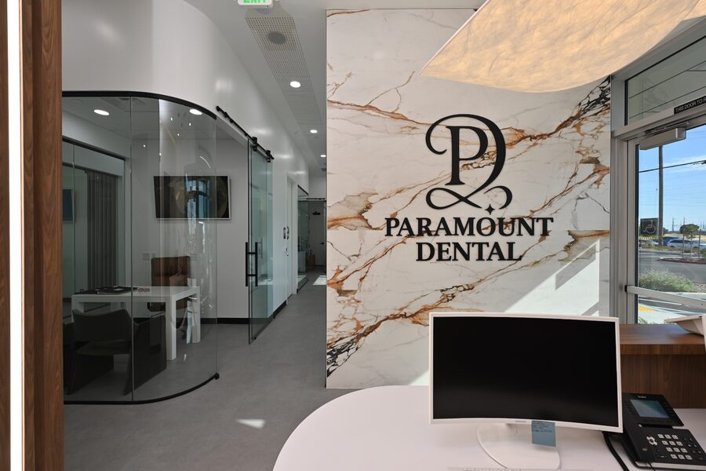
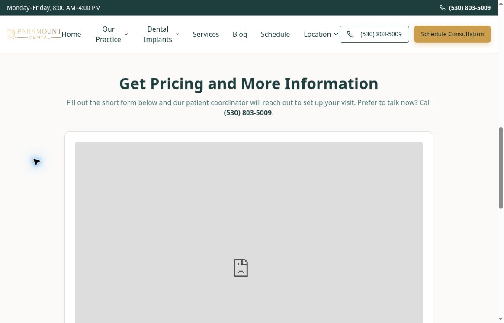

Named locations
Roseville, Sacramento, Elk Grove, Yuba City and Placerville are all listed.
 Prepared for / Paramount DentalDiscuss the plan ↗
Prepared for / Paramount DentalDiscuss the plan ↗You already have a substantial patient-video library, a visible doctor and five clearly named locations. That is useful creative material. Vessel would make the path from those stories to a consultation easier to understand, verify and measure.
See the findings + our fixes ↘

Specific public observations. A concrete fix for each. Where a test could not establish the answer, we say so.
Privacy Policy, Terms of Service and Accessibility in the implant-site footer each use a “#” destination instead of a dedicated policy page.
Connect genuine, approved policy pages and verify the same links beside any lead form before running a campaign.
The consultation form frame showed “refused to connect” in this cloud-browser session on both the homepage and schedule page. This is not proof of a universal visitor failure.
Reproduce on real mobile and desktop browsers, verify embed permissions and provide a working fallback contact route.
The implant homepage displays a combined five-star-review claim, but its nearby copy does not explain the location, platform or snapshot date behind that total.
Show a source-linked review breakdown by office and date. Let the reader distinguish practice-wide proof from the chosen location.
The schedule page says a coordinator calls or texts to find a time. It is a consultation request, not a live appointment-time selection.
Use consistent request language, name the expected callback step and connect inquiry, confirmed consultation and attendance as separate outcomes.
The implant homepage uses a board-certified implant-specialist label and broad comparison and warranty language. Supporting details are not presented beside those claims.
Verify the credential source and warranty terms with the practice. Replace vague superlatives with specific substantiated information and obtain qualified review.
A single central phone number is used across the implant website, while the main dental site gives location-specific contact paths. That may be intentional routing.
Confirm how calls and leads reach each office. Match campaign location, landing-page context and coordinator routing before changing any number.

Unaltered source capture. Public page state can change; the observation above describes this review session.
Open full capture ↗ AIMS Sports RecoveryVessel client work. Website, content and campaign case study.View the work ↗
AIMS Sports RecoveryVessel client work. Website, content and campaign case study.View the work ↗ Precision Home LoansClient work / Megan Meyerdick. Her Precision Home Loans client brand is shown.
Precision Home LoansClient work / Megan Meyerdick. Her Precision Home Loans client brand is shown.One connected plan for the website, production, campaigns and follow-up. The scope starts with the problems above.
Repair placeholder policy links, verify form loading and make the request-to-callback process explicit across the implant journey.
Review existing permissions and source footage. Recut approved stories into concise hooks, supporting explanations and clear consultation prompts.
Review actual live ad destinations and account setup. Pilot one office / treatment journey before extending the approach to other locations.
Validate consent-aware events across the form provider and the site. Separate leads, booked consults and attendance by office.
Proposed work for discussion, not a production commitment. Final deliverables, access, publishing approvals and timing would be agreed together. Your team retains operational decisions, clinical review where relevant, permissions and customer / patient responses.
Bring the real expertise forward. Each concept has one question, one useful answer and one clear next step.
“What happens when I request a consultation?”
Dr. Cheema and the coordinator explain the actual callback, location selection and evaluation process.
“What do people ask before choosing implants?”
Use clinician-approved explanations from the existing library as the starting point for short, specific edits.
“What did the process mean for you?”
Recut a permission-verified interview with clear individual context. Preserve meaning and avoid guaranteed outcomes.
These are proposed concepts. Filming dates, volume, participants and reuse rights would be confirmed before production. All medical explanations and case stories require practice approval and appropriate consent.
Verify the foundations. Build the first useful journey. Learn from real inquiries before widening the scope.
Check the embedded form on real devices, connect policies, substantiate claims and map the office routing and analytics ownership.
Build one office-specific page and approved video set. Validate tracking and coordinator handoff before testing campaign changes.
Review qualified leads and consultations by office. Refine the first route, then decide whether the same approach fits a second office.
Public pages and conversion routes inspected in a cloud browser and fetched source. No form submitted. Real-device touch, keyboard and form testing remains a launch gate.
A mobile PageSpeed Insights test was requested on October 20, but the service returned a quota error. No score or Core Web Vitals result is claimed. Establish a repeatable baseline, then retest the agreed pages.
The main website’s review widget shows 4.6 from 133 reviews and includes stories from multiple offices. A direct live Google rating for Roseville was not verified. Checked October 20. Source checked Oct 20 ↗
The linked Dr. Cheema Instagram profile metadata lists 7,027 followers and 240 posts. Latest post dates were not exposed in the unauthenticated feed; current cadence remains to be confirmed. Source checked Oct 20 ↗
Public Meta Ad Library retrieval did not return usable results in this review. Current active ads, advertiser identity and destination URLs remain unverified; review the live library and accounts before changing campaigns.
The form is hosted on a separate LeadConnector domain. Cross-domain conversion capture and events inside that frame were not verified.
Visible entry routes and expectations inspected without submitting personal information. Confirmation delivery and staff response remain untested.
Sampled public copy, links and metadata reviewed. Search Console, index coverage and local map positions were not verified.
No repeatable ChatGPT / Google AI visibility benchmark was established. Test named prompts, location and dates before drawing conclusions.
Practice facts, clinical statements, filming permissions, source footage rights and any regulated advertising language require appropriate review before launch.
This is a public-information review, not an account audit or legal / clinical opinion. No access to private analytics or ad accounts was assumed, and no claim of lost revenue, guaranteed bookings, search position or universal technical failure is made. Timing depends on access, approvals and the agreed scope.
Select the pilot location, confirm access to the page and form provider, and identify the patient footage already cleared for reuse. Start with a journey we can verify.
Discuss the first scope ↗